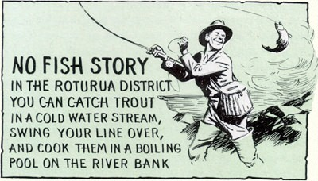

Cigarettes are more expensive than in the United States and are mostly of the “straight Virginia” type.
Tipping is not nearly as common in New Zealand as it is in America. It is sometimes done in hotels but never in restaurants.
THE New Zealanders love games. They say that the three R’s out there are racing, rugby, and “rastling.” And if you enjoy outdoor activities, you’re in for a good time.
Considering how far apart we are (6,500 miles), we have had many sporting contacts with New Zealand. Working there as a blacksmith, Bob Fitzsimmons developed the punch which won him his fame in the United States. Bill Murphy, one-time featherweight world champion, came from New Zealand as did Torn Heeney who fought Gene Tunney for the heavyweight title. And maybe you remember Jack Lovelock, the sensational New Zealand runner who broke the world’s mile record in the United States and went on to take the 1,500-meter run in the Olympics.
Rugby is the New Zealand type of football and is the national game. It occupies a tremendous position in peacetime New Zealand life and an important position even in wartime. There are two varieties, the amateur
game (Rugby Union), played with 15 men on a team, and the professional (Rugby League), played with 13 men. It has many resemblances to American football, is just as tough (for they play it without any padding or helmets), and is a game which any American used to football would learn quickly. It is so much a part of New Zealand life that there would be no quicker way for an Army unit to get into the heart of New Zealand than by forming a team and playing rugby or teaching them our game. It is played on Saturday afternoons throughout the winter in New Zealand and every young man seems to play; even a town like Dunedin, with a population of 82,700 people, has over 40 or 50 sides playing in normal times each week end.
